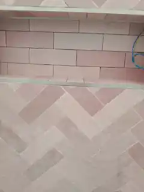
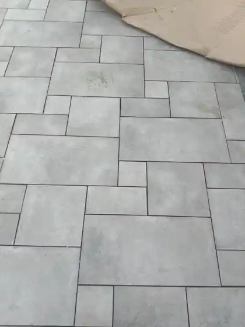
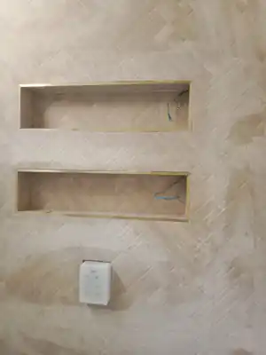

شاهزاد ستون آند فنشنگ
تركيب بلاط الأرضيات والجدران في جدة
تركيب السيراميك والبورسلان وبلاط الأرضيات والجدران بدقة واهتمام باستواء السطح والفواصل داخل جدة.
- تركيب السيراميك والبورسلان
- بلاط الأرضيات والجدران
- ضبط الميزان والفواصل والقصات
- تجديد الأرضيات والتشطيبات
نستقبل استفسارات العملاء داخل مدينة جدة. أرسل صور الموقع والمقاسات التقريبية عبر واتساب.
تواصل معنا الآنأعمال البلاط وصور توضيحية للمقاسات
صور من أعمال البلاط مع نماذج المقاسات المطلوبة
أعدنا صورة البلاط السابقة من معرض أعمالك، وأضفنا إليها أمثلة توضيحية للمقاسين 120 × 120 سم و120 × 60 سم. صور المقاسات أمثلة توضيحية وليست صوراً من تنفيذ مشاريعك.





